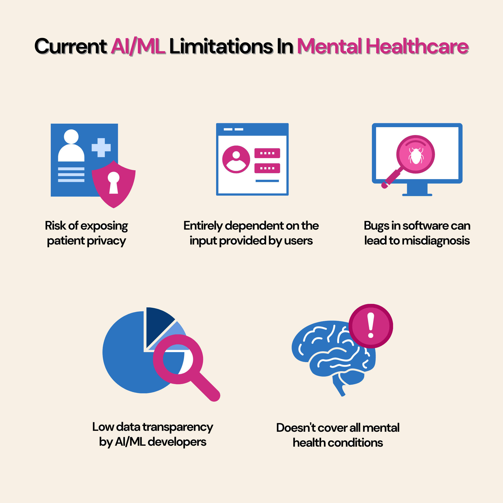

Risks of the Use of AI-Powered Tools and Initiatives for Suicide Prevention
Fig 5: Current Limitations in Mental Healthcare
Prevention of suicide is a global health priority, with "approximately 800,000 individuals dying by suicide yearly, and for every suicide death, there are another 20 estimated suicide attempts” (Holmes et al., 2025). With recent development, AI plays a major role as it is more scalable, affordable and accessible. In addition, they can detect subtle data patterns, relationships and variable interactions that are difficult for humans to discern. However, there are numerous risks involved with integration of AI in such a sensitive field, which raise ethical, privacy and practical application challenges in AI-based models. This part will critically examine risk and limitations involved with implementing AI powered tools and initiatives for suicide prevention by carefully considering recent research.
The rising suicide rates all over the world annually have led to the adoption of AI, which has acted as a catalyst in advancing suicide prevention. However, the increased use of AI is directly proportional to the risk involved with it. Therefore, we have identified key risks, which are critical and play a significant role in people’s lives.
In today’s technological era, people generate an estimated 402.74 million terabytes of data every day (Exploding Topics, 2025), which comes from every possible sector, whether it’s social media, health records or day-to-day online interactions. This massive data production highlights the critical need to value and protect the “privacy, security and anonymity of both the original posters and end users” (Holmes et al.,2025). As AI models are often trained on such sensitive data, this intensifies ethical and security concerns. Therefore, when considering AI-powered suicide prevention tools, the collection, sharing and use of personal data without explicit consent raise a growing area of concern that must be critically examined. Recent studies have identified that the integration of AI and social media data acts as a double-edged sword in terms of balancing privacy and confidentiality concerning the use of public data with opportunities for suicide detection. It was found that only 1 of the 31 identified studies sought such permissions (Holmes et al., 2025). Moreover, it was found that users of these social media platforms were barely informed about the consequences, and they weren’t given the opportunity to opt out of this analysis. Which, in turn, directly increases the risk of privacy breaches and undermining fundamental rights (Abdelmoteleb et al., 2025). In addition, this concern violates the right to privacy. Therefore, legislative measures, for instance, “recently underscored by European legislation prohibiting certain data-gathering practices related to health information by the algorithms of Facebook and other large social media companies” (European Commission,2022). Furthermore, studies note significant bias in AI models related to demographics such as religion, race, nationality, sexuality and age, which is potentially disadvantageous to vulnerable groups (Holmes et al.,2025).

Figure 6: Statistics for Global Data generated annually
The Lee-Luda incident is a reminder of how the integration of AI in the real world without proper monitoring guidance can cause disastrous events. The ScatterLab app’s parent company was found collecting intimate conversations between lovers without informing the user and using them for creating AI chatbot called Lee-Luda. Nowadays, most people are less confident about how their data will be used by the company, and it can be hard to imagine how it can cause potential harm. The recent incident of South Korea data misuse,therefore, provides us with a clear picture. Interestingly, Lee-Luda gained popularity quickly, having around 750,000 user conversations within the first couple of weeks. However, within 2 weeks of launch, people started questioning whether the data was refined enough, as it started using verbally abusive language about certain social groups and sexually explicit comments to several users.
It becomes evident when it started revealing people’s nicknames and home addresses in its responses. It was found that prior to Lee-Luda’s release, the company uploaded around 1700 sentences, which were part of a large dataset it collected, on GitHub. GitHub is an open-source platform that developers use to store and share code and data. Furthermore, it was found the GitHub training dataset exposed names of more than 20 people, along with their relationship status, the location they had visited and some of their medical information. While this incident was a big story in South Korea, it received very little attention elsewhere. However, this incident highlights the general trend of AI industry, where people have little control over their personal data and how it is used and processed once it’s collected. In fact, it took five years for users to recognize that their personal data was being used to train the data model without their consent. Neither did they know that ScatterLab shared their private conversations on an open-source platform like GitHub, where anyone can gain access (Jang, 2021).
Recent studies found that despite incorporating psychological and advanced statistical modelling, models fail to demonstrate actionable accuracy, especially over short-term intervals. Moreover, it was not just about poor sensitivity or low positive predictive value but the absence of robust, targeted interventions that can be meaningfully used based on risk stratification. Therefore, without clear evidence about which intervention works for which risk profiles, the use of these tools is less beneficial (Abdelmoteleb et al., 2025). It is important that predictive models should complement rather than replace clinical judgment and human interaction. Over-reliance on these models without considering patient nuances and clinical expertise could harm patient health (atmakuru et al., 2025). Despite considering AI’s ability to detect suicide risk, there is still a drawback regarding their ability to identify individual risk trajectories or precise timing of predicting suicide crisis remains limited. Moreover, current models are highly focused on who questions rather than when predictions, which is a distinction important for clinical implementation (Abdelmoteleb et al., 2025). Lastly, it is important that AI models learn and adapt based on specific subgroups or religions to ensure its effectiveness in different cultural and societal contexts (atmakuru et al., 2025).
The AI use in mental health support systems brings several challenges, which includes crucial unavoidable areas like consent and privacy, bias and fairness, responsibility and trust and transparency. Firstly, models use a lot of personal data, usually taken from other companies or social media platforms which is later used to train AI models. Therefore, it is important to consent to users how their data is being used, or else it violates privacy and undermines individual autonomy. Secondly, AI models trained on unrefined data could generate biased result about certain groups of people, especially vulnerable populations. Therefore, this unequal treatment should be treated, and it’s important to make sure in the future with the rise of more new data, it gets updated too. Or else it would be like treating a disease without knowing the actual cause. Additionally, it is important that companies just don’t only take credits when things are working well without problems. Simultaneously, take responsibility for all processes they do, which might affect real life. As AI suicide prevention isn’t just technical, but it involves real human lives, so responsibility is a must. Last but not least, trust and transparency, it is important to educate people not only how these tools work, but also how their rights are respected, so that people can trust these tools. Additionally, without transparency, these tools can do more harm than good.
In conclusion, it is undeniable that AI use for suicide prevention brings several benefits, but these benefits come with significant risk and ethical challenges. In such a sensitive matter where life is at stake, AI models should be flawless or it will act like a double-edged sword, instead of helping, it could cause irreversible results. Therefore, AI should be used as a supporting hand for decision-making, rather than a replacement. As this technology continues to evolve, bridging computer science and mental health requires a multidisciplinary approach, which means models should not only be flawless but also ethical, maintaining people’s privacy and fundamental rights as humans.